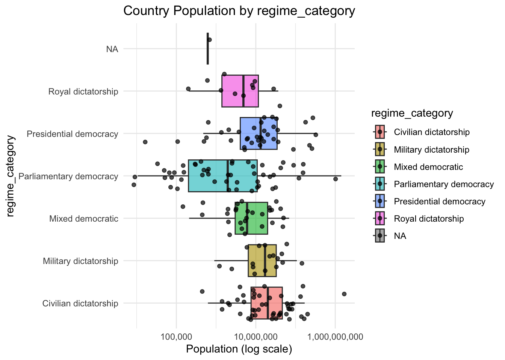
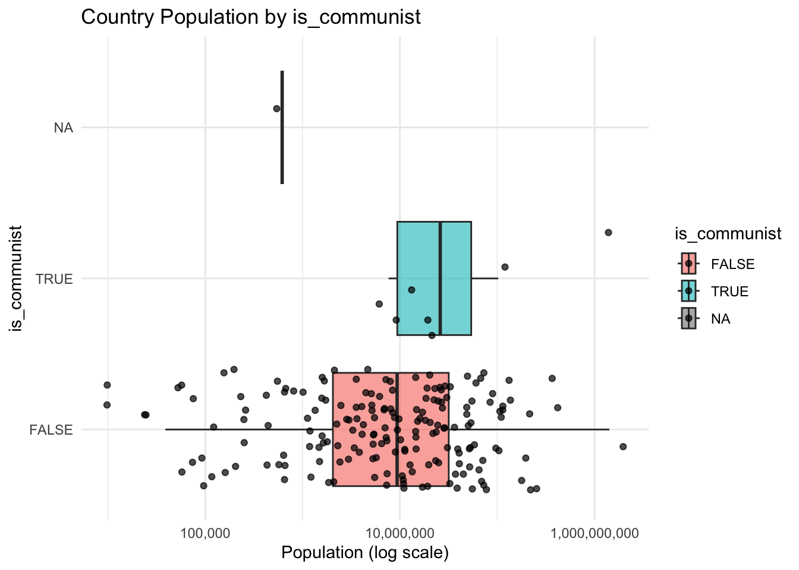
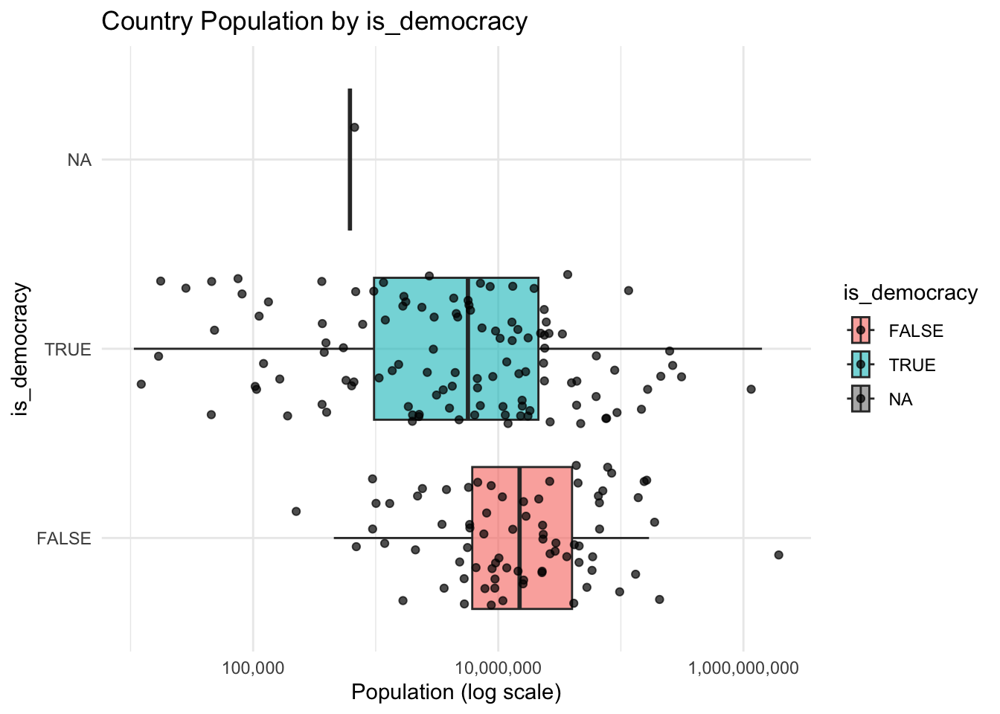
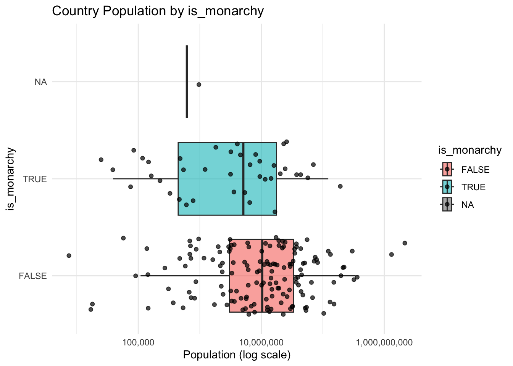
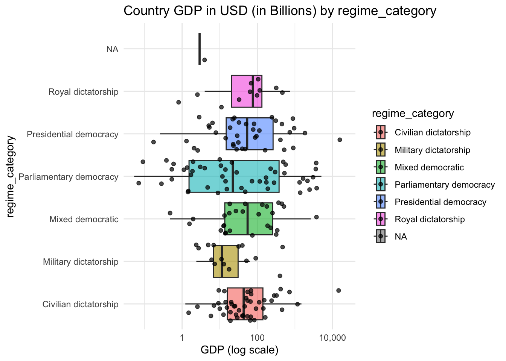
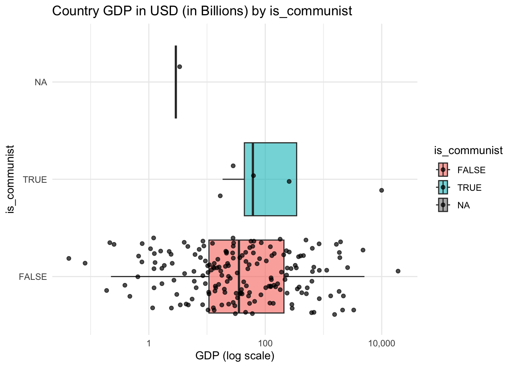
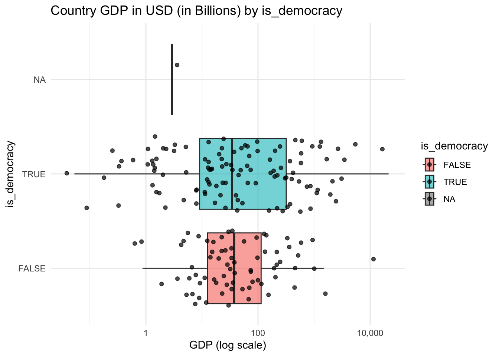
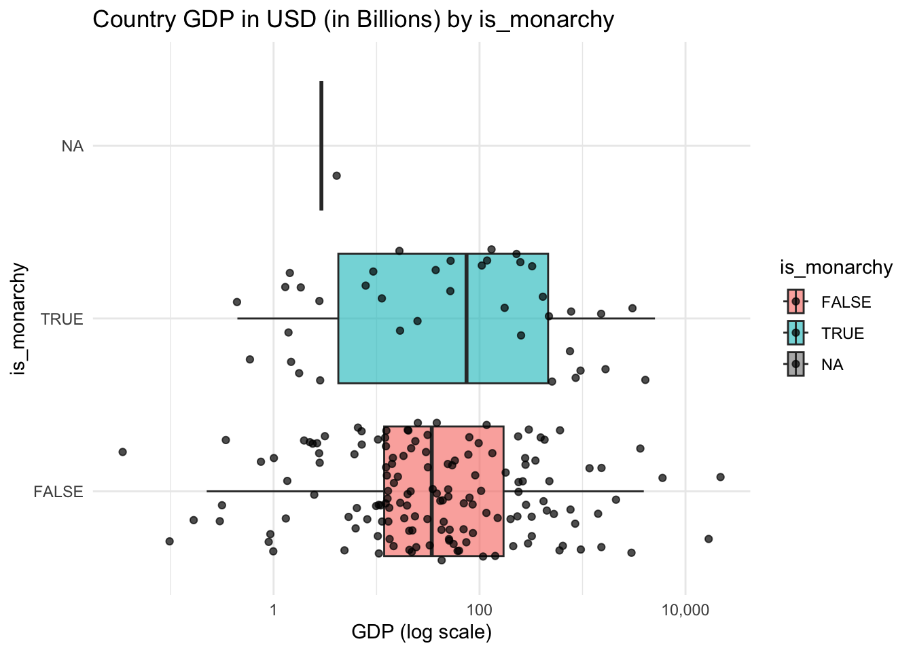

library(tidyverse)
library(kableExtra)
library(knitr)
library(httr)
library(jsonlite)
library(tidyjson)
library(glue)
library(gt)
library(countrycode)
democracy_data <- readr::read_csv('https://raw.githubusercontent.com/rfordatascience/tidytuesday/main/data/2024/2024-11-05/democracy_data.csv')Project 1 Checkpoint 3
Data Set Up
Assigning Continent names to each country and filtering out non-countries
democracy_data <- democracy_data |>
mutate(
continent = case_when(
country_code %in% c(
"DZA","AGO","BEN","BWA","BFA","BDI","CMR","CPV","CAF","TCD","COM","COG","COD",
"CIV","DJI","EGY","GNQ","ERI","SWZ","ETH","GAB","GMB","GHA","GIN","GNB","KEN",
"LSO","LBR","LBY","MDG","MWI","MLI","MRT","MUS","MAR","MOZ","NAM","NER","NGA",
"RWA","STP","SEN","SYC","SLE","SOM","ZAF","SSD","SDN","TZA","TGO","TUN","UGA",
"ZMB","ZWE","ZAR"
) ~ "Africa",
# North America (incl. Caribbean)
country_code %in% c(
"CAN","USA","MEX","BHS","BRB","CUB","DMA","DOM","GRD","HTI","JAM",
"KNA","LCA","VCT","TTO","ATG"
) ~ "North America",
# Central America
country_code %in% c(
"BLZ","CRI","SLV","GTM","HND","NIC","PAN"
) ~ "Central America",
# South America
country_code %in% c(
"ARG","BOL","BRA","CHL","COL","ECU","GUY","PRY","PER","SUR","URY","VEN"
) ~ "South America",
country_code %in% c(
"AFG","ARM","AZE","BHR","BGD","BTN","BRN","KHM","CHN","CYP","GEO","IND","IDN",
"IRN","IRQ","ISR","JPN","JOR","KAZ","KWT","KGZ","LAO","LBN","MYS","MDV","MNG",
"MMR","NPL","PRK","OMN","PAK","PSE","PHL","QAT","SAU","SGP","KOR","LKA","SYR",
"TWN","TJK","THA","TLS","TUR","TKM","ARE","UZB","VNM","YEM"
) ~ "Asia",
country_code %in% c(
"ALB","AND","AUT","BLR","BEL","BIH","BGR","HRV","CYP","CZE","DNK","EST","FIN",
"FRA","DEU","GRC","HUN","ISL","IRL","ITA","LVA","LIE","LTU","LUX","MLT","MDA",
"MCO","MNE","NLD","MKD","NOR","POL","PRT","ROU","RUS","SMR","SRB","SVK","SVN",
"ESP","SWE","CHE","UKR","GBR","VAT","GER","ROM"
) ~ "Europe",
country_code %in% c(
"AUS","FJI","KIR","MHL","FSM","NRU","NZL","PLW","PNG","WSM","SLB","TON","TUV",
"VUT","NUR"
) ~ "Oceania",
TRUE ~ NA_character_
)
) |>
filter(!is.na(continent))Research Questions
Are certain political ideologies more popular among higher/lower GDP countries?
What is the association between the regime category and population of a country?
Do higher/lower population countries prefer certain political ideologies?
To-Do
two new country-level data sources
Stat 431: One of these must be acquired using APIs or webscraping
Stat 541: One of these must be acquired using APIs, the other using webscraping.
descriptions of each of the new datasets
a “meta” dataset containing all the acquired data (joined together)
at least two data summaries OR visualizations incorporating the additional country-level data
Web Scraping - Population
library(rvest)
populations <- read_html("https://en.wikipedia.org/wiki/List_of_countries_and_dependencies_by_population")
pop_data <- populations |>
html_element("table.wikitable") |>
html_table(fill = TRUE) |>
select(
Country = 1,
Population = 2
) |>
mutate(
Country = trimws(Country),
Population = as.numeric(gsub("[^0-9]", "", Population)) # strip anything that isn't a digit
) |>
filter(!is.na(Population))
pop_data# A tibble: 240 × 2
Country Population
<chr> <dbl>
1 World 8232000000
2 India 1417492000
3 China 1404890000
4 United States 341784857
5 Indonesia 288315089
6 Pakistan 241499431
7 Nigeria 223800000
8 Brazil 213421037
9 Bangladesh 169828911
10 Russia 146028325
# ℹ 230 more rows2020 Country Population Data
pop_data <- pop_data |>
mutate(
iso3c = countrycode(Country,
origin = "country.name",
destination = "iso3c"
))
democracy_data_2020 <- democracy_data |>
filter(year == 2020) |>
mutate(
iso3c = countrycode(country_name,
origin = "country.name",
destination = "iso3c"
))
# Now join based on iso3c country code
country_data <- pop_data |>
inner_join(democracy_data_2020,
by = "iso3c")
country_data# A tibble: 192 × 47
Country Population iso3c country_name country_code year
<chr> <dbl> <chr> <chr> <chr> <dbl>
1 India 1417492000 IND India IND 2020
2 China 1404890000 CHN China CHN 2020
3 United States 341784857 USA United States USA 2020
4 Indonesia 288315089 IDN Indonesia IDN 2020
5 Pakistan 241499431 PAK Pakistan PAK 2020
6 Nigeria 223800000 NGA Nigeria NGA 2020
7 Brazil 213421037 BRA Brazil BRA 2020
8 Bangladesh 169828911 BGD Bangladesh BGD 2020
9 Russia 146028325 RUS Russia RUS 2020
10 Mexico 131001723 MEX Mexico MEX 2020
# ℹ 182 more rows
# ℹ 41 more variables: regime_category_index <dbl>, regime_category <chr>,
# is_monarchy <lgl>, is_commonwealth <lgl>, monarch_name <chr>,
# monarch_accession_year <dbl>, monarch_birthyear <dbl>,
# is_female_monarch <lgl>, is_democracy <lgl>, is_presidential <lgl>,
# president_name <chr>, president_accesion_year <dbl>,
# president_birthyear <dbl>, is_interim_phase <lgl>, …Box-plots for the Relationship Between Categorical Variables and Population
plot_pop_by_category <- function(cat_var) {
ggplot(country_data, aes(y = {{ cat_var }}, x = Population, fill = {{ cat_var }})) +
geom_boxplot(outlier.shape = NA, alpha = 0.6) +
geom_jitter(width = 0.2, size = 1.5, alpha = 0.7) +
scale_x_log10(labels = scales::comma) +
labs(
title = paste("Country Population by", deparse(substitute(cat_var))),
y = deparse(substitute(cat_var)),
x = "Population (log scale)"
) +
theme_minimal()
}
plot_pop_by_category(regime_category)
plot_pop_by_category(is_communist)
plot_pop_by_category(is_democracy)
plot_pop_by_category(is_monarchy)
Summary Statistics for the Relationship Between Categorical Variables and Population
summarize_pop_by_category <- function(cat_var) {
country_data |>
group_by({{ cat_var }}) |>
summarize(
n = n(),
mean_pop = mean(Population, na.rm = TRUE),
median_pop = median(Population, na.rm = TRUE),
sd_pop = sd(Population, na.rm = TRUE),
min_pop = min(Population, na.rm = TRUE),
max_pop = max(Population, na.rm = TRUE),
.groups = "drop"
) |>
arrange(desc(median_pop))
}
summarize_pop_by_category(regime_category)# A tibble: 7 × 7
regime_category n mean_pop median_pop sd_pop min_pop max_pop
<chr> <int> <dbl> <dbl> <dbl> <dbl> <dbl>
1 Civilian dictatorship 48 63165837. 20093620 201671843. 623327 1.40e9
2 Military dictatorship 17 28030252. 17073087 29258563. 902623 1.08e8
3 Presidential democracy 37 47543109. 13224860 84239569. 16733 3.42e8
4 Mixed democratic 28 12889554. 6047070. 15546428. 209607 6.91e7
5 Royal dictatorship 11 10209685. 4881254 13390585. 205557 3.68e7
6 Parliamentary democracy 50 45290941. 1969964. 202151852. 10643 1.42e9
7 <NA> 1 616500 616500 NA 616500 6.17e5summarize_pop_by_category(is_communist)# A tibble: 3 × 7
is_communist n mean_pop median_pop sd_pop min_pop max_pop
<lgl> <int> <dbl> <dbl> <dbl> <dbl> <dbl>
1 TRUE 7 226872584. 25950000 520513393. 7647000 1404890000
2 FALSE 184 34876209. 9354056. 114008057. 10643 1417492000
3 NA 1 616500 616500 NA 616500 616500summarize_pop_by_category(is_democracy)# A tibble: 3 × 7
is_democracy n mean_pop median_pop sd_pop min_pop max_pop
<lgl> <int> <dbl> <dbl> <dbl> <dbl> <dbl>
1 FALSE 76 47641855. 14945934. 161681626. 205557 1404890000
2 TRUE 115 38126518. 5656779 141671614. 10643 1417492000
3 NA 1 616500 616500 NA 616500 616500summarize_pop_by_category(is_monarchy)# A tibble: 3 × 7
is_monarchy n mean_pop median_pop sd_pop min_pop max_pop
<lgl> <int> <dbl> <dbl> <dbl> <dbl> <dbl>
1 FALSE 151 48925225. 10372335 167181444. 10643 1417492000
2 TRUE 40 15440539. 5111627 25262174. 38857 122850000
3 NA 1 616500 616500 NA 616500 616500API - GDP in USD
# Obtain 2020 GDP in USD for inputted country
get_gdp_2020 <- function(country, key = my_key)
{
# Store url to access API with country and key queries
url <- glue("https://api.api-ninjas.com/v1/gdp?year=2020;country={country};X-Api-Key={key}")
# Temporarily store JSON data safely
my_data <- safely(fromJSON)(url)
# Check if JSON was successfully obtained
if (is.null(my_data$result) |
length(my_data$result) == 0) {
return(NA)
} else {
return(my_data$result$gdp_nominal)
}
}Store Country GDPs in USD
# We used a personal API key stored as "my_key"
# Get GDP for all countries
gdps <- map_dbl(.x = country_data$iso3c, .f = get_gdp)
# Store GDP with country code as a tibble
country_gdps <- tibble(iso3c = country_data$iso3c, GDP = gdps)
# Save tibble as a csv
write.csv(country_gdps, file = "country_gdps.csv")Create Countries Meta Dataset for 2020
# Read in csv GDP data
gdp_data <- read.csv("country_gdps.csv")
gdp_data <- gdp_data |>
select(-X)
# Combine GDP with aggregate 2020 data
country_meta_data <- country_data |>
inner_join(gdp_data,
by = "iso3c")
country_meta_data# A tibble: 194 × 48
Country Population iso3c country_name country_code year
<chr> <dbl> <chr> <chr> <chr> <dbl>
1 India 1417492000 IND India IND 2020
2 China 1404890000 CHN China CHN 2020
3 United States 341784857 USA United States USA 2020
4 Indonesia 288315089 IDN Indonesia IDN 2020
5 Pakistan 241499431 PAK Pakistan PAK 2020
6 Nigeria 223800000 NGA Nigeria NGA 2020
7 Brazil 213421037 BRA Brazil BRA 2020
8 Bangladesh 169828911 BGD Bangladesh BGD 2020
9 Russia 146028325 RUS Russia RUS 2020
10 Mexico 131001723 MEX Mexico MEX 2020
# ℹ 184 more rows
# ℹ 42 more variables: regime_category_index <dbl>, regime_category <chr>,
# is_monarchy <lgl>, is_commonwealth <lgl>, monarch_name <chr>,
# monarch_accession_year <dbl>, monarch_birthyear <dbl>,
# is_female_monarch <lgl>, is_democracy <lgl>, is_presidential <lgl>,
# president_name <chr>, president_accesion_year <dbl>,
# president_birthyear <dbl>, is_interim_phase <lgl>, …Box-plots for the Relationship Between Categorical Variables and GDP in USD (in Billions)
plot_gdp_by_category <- function(cat_var) {
ggplot(country_meta_data, aes(y = {{ cat_var }}, x = GDP, fill = {{ cat_var }})) +
geom_boxplot(outlier.shape = NA, alpha = 0.6) +
geom_jitter(width = 0.2, size = 1.5, alpha = 0.7) +
scale_x_log10(labels = scales::comma) +
labs(
title = paste("Country GDP in USD (in Billions) by", deparse(substitute(cat_var))),
y = deparse(substitute(cat_var)),
x = "GDP (log scale)"
) +
theme_minimal()
}
plot_gdp_by_category(regime_category)
plot_gdp_by_category(is_communist)
plot_gdp_by_category(is_democracy)
plot_gdp_by_category(is_monarchy)
Summary Statistics for the Relationship Between Categorical Variables and GDP in USD (in Billions)
summarize_gdp_by_category <- function(cat_var) {
country_meta_data |>
group_by({{ cat_var }}) |>
summarize(
n = n(),
mean_gdp = mean(GDP, na.rm = TRUE),
median_gdp = median(GDP, na.rm = TRUE),
sd_gdp = sd(GDP, na.rm = TRUE),
min_gdp = min(GDP, na.rm = TRUE),
max_gdp = max(GDP, na.rm = TRUE),
.groups = "drop"
) |>
arrange(desc(median_gdp))
}
summarize_gdp_by_category(regime_category)# A tibble: 7 × 7
regime_category n mean_gdp median_gdp sd_gdp min_gdp max_gdp
<chr> <int> <dbl> <dbl> <dbl> <dbl> <dbl>
1 Royal dictatorship 11 148. 75.9 218. 0.869 734.
2 Mixed democratic 28 234. 55.1 510. 0.476 2646.
3 Presidential democracy 39 776. 53.7 3408. 0.259 21354.
4 Civilian dictatorship 48 446. 43.2 2187. 1.22 14863.
5 Parliamentary democracy 50 522. 22.3 1076. 0.053 5054.
6 Military dictatorship 17 73.2 11.5 152. 2.39 501.
7 <NA> 1 2.91 2.91 NA 2.91 2.91summarize_gdp_by_category(is_communist)# A tibble: 3 × 7
is_communist n mean_gdp median_gdp sd_gdp min_gdp max_gdp
<lgl> <int> <dbl> <dbl> <dbl> <dbl> <dbl>
1 TRUE 7 3066. 61.3 6596. 18.5 14863.
2 FALSE 186 383. 35.3 1693. 0.053 21354.
3 NA 1 2.91 2.91 NA 2.91 2.91summarize_gdp_by_category(is_democracy)# A tibble: 3 × 7
is_democracy n mean_gdp median_gdp sd_gdp min_gdp max_gdp
<lgl> <int> <dbl> <dbl> <dbl> <dbl> <dbl>
1 FALSE 76 323. 37.4 1752. 0.869 14863.
2 TRUE 117 538. 34.4 2110. 0.053 21354.
3 NA 1 2.91 2.91 NA 2.91 2.91summarize_gdp_by_category(is_monarchy)# A tibble: 3 × 7
is_monarchy n mean_gdp median_gdp sd_gdp min_gdp max_gdp
<lgl> <int> <dbl> <dbl> <dbl> <dbl> <dbl>
1 TRUE 40 464. 74.8 955. 0.445 5054.
2 FALSE 153 453. 34.4 2165. 0.053 21354.
3 NA 1 2.91 2.91 NA 2.91 2.91